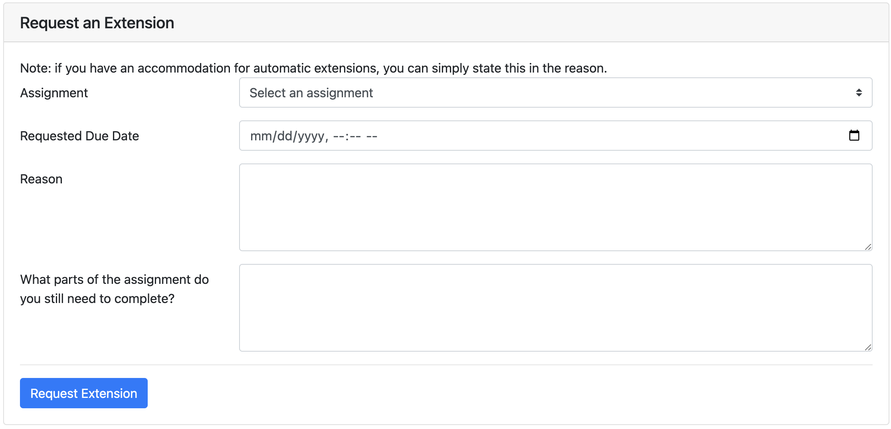
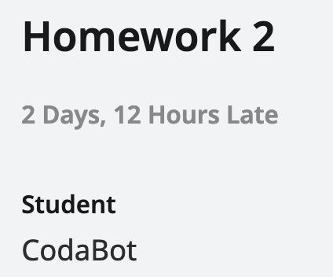

Extensions Policy
Deadline Philosophy
61B is a fast-paced course, especially in the first few weeks. If you fall behind, it will be very difficult to catch up.
However, we understand that you may be busy, tired, or experiencing a crisis. We would like your grade to reflect what you demonstrate proficiency in and accomplish in the class, and have designed some flexibility to our lateness policy to achieve that as much as possible. Your health, safety, and well-being are the priority, and ideally your grades should reflect what you have learned, not when you learned it.
Our extensions policy trusts that you are adults who can handle your own time management. If you request an extension, we trust that you understand that you will need to spend extra time to catch up with the class.
Our deadlines are set up to give you time before midterms to study (with no other assignments due). They are also set up so that you are not expected to work over weekends, holidays (e.g. Thanksgiving break), or RRR week. If you request too many extensions and fall behind, this may no longer be true, but that’s your prerogative.
Leading up to an assignment deadline, we usually provide increased support for that assignment (in the form of increased staffing). As a result, continuing to work on an assignment after the original deadline may lead to slower response times on Ed/longer wait times in office hours, as staff will actively prioritize assignments whose deadlines have not passed.
How to Request Extensions
- Navigate to the extensions page on Beacon.
-
In the “Requesting an Extension” form, fill out each field and click “Submit”.

- We’ll respond to your request in 1–2 business days.
Processing Extensions
Extensions are not always reflected on Gradescope. You might see your assignment tagged as late on Gradescope, like this:

You can ignore that tag. The autograder score you see on Gradescope is your score for the assignment. The “2 Days, 12 Hours Late” tag does not affect your grade.
If your extension was approved after you submitted the assignment, then the autograder might mark your submission late and give you a score of 0.001.
If you see a score of 0.001, but that score is incorrect because you had an approved extension, then you can make a private post on Ed in the Logistics → Grade Corrections category, and we can re-run the autograder for you. Make sure to fill out the entire Ed post template!
It can take up to a week for scores on Gradescope to be synced to Beacon. If your Beacon grade still looks incorrect after a week (not earlier), then you can make a private post on Ed in the Logistics → Grade Corrections category.
Extensions Policy
Extensions will be processed on a case-by-case basis. Extensions are not guaranteed until you receive a reply in Beacon.
It takes staff 1–2 business days to respond to extension requests. Mondays through Fridays are business days, and Saturdays and Sundays are not. If you request an extension request on Friday, you may not get a response until the following Monday.
Please be timely when requesting extensions! If you request an extension at 11:50pm on the due date, don’t expect a 10-minute response time.
If you request an extension, but you have not heard back from staff, you should make your best submission (just in case the extension is not approved). Then, you can continue working after the deadline, pretending that your extension is approved. Remember, though, extensions are not guaranteed until you receive an official response.
Please do not post on Ed, email course emails, or email individual TAs/instructors about extension requests. This just creates extra work for us and slows down our response time. Once you’ve submitted the request through Beacon, we’ll process requests in order, and contacting us again will not speed things up.
Warning: Surveys cannot be extended.
Warning: Homeworks 3 and 4 are conceptual assignments to prepare you for Midterm 2 and the final exam. They are in scope for Midterm 2 and the final exam, respectively. If you choose to extend those assignments, it is your responsibility to understand the content covered in those homeworks for the exams.
(Update, Nov 25, 2024: This page previously said that homeworks and Project 3 cannot be extended, but we’ve revised the policy.)
DSP Extension Accommodations
If you have DSP extension accommodations, you will be able to receive extensions on all assignments by requesting through beacon. To request for a DSP accommodation related extension, you can simply put “DSP accommodation” as the reason. We will cross-check with our DSP records to make the decision.
You will also be able to receive extensions on the non-extendable assignments listed above, with limited extensions for homework 3 and 4. We will release more details regarding Project 3B/C extensions later in the semester.
If you have any questions related to your DSP accommodation, feel free to reach out to a staff member through a student support meeting!
Extenuating Circumstances
If you experience significant extenuating circumstances that prevent you from completing assignments for an extended amount of time, then you can request an extension with necessary length subject to your own judgement through beacon. Please elaborate your reason with as much detail as possible so the support staff have necessary context to process your request.
Some examples of extenuating circumstances include: Extended sickness, technical issues (broken laptop), family emergency, etc.
If you would like to meet with a staff member and discuss your situation in more detail, feel free to sign up for a student support meeting.
Student Support Meetings
If you’d like to speak to a student support TA, you can book an appointment with us here.
Late Adding CS 61B
If you are attempting to officially enroll in CS 61B late in the semester, you must turn in all outstanding course assignments within 3 days of joining the course. This means that you should be following along with the course schedule, even before you enroll in the class.
Please use the Late Add Intent form if you are waiting to be enrolled and need access to course platforms.
If you’d like to meet with course staff for advice on catching up with the course, you can set up a student support meeting (see link above).